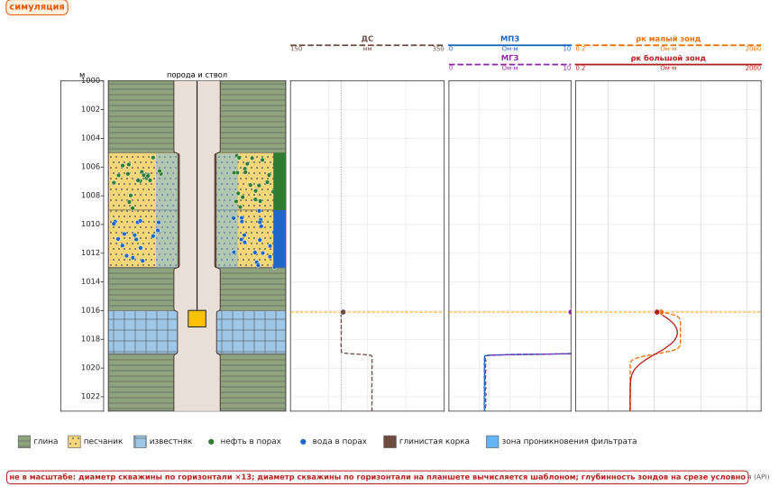
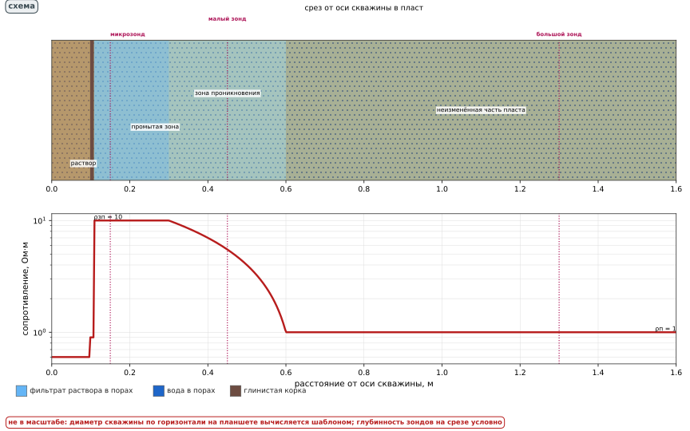
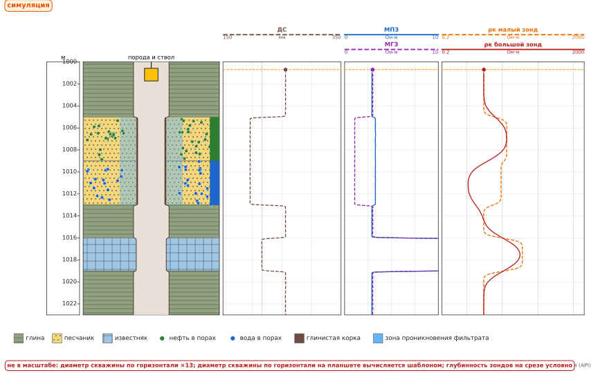
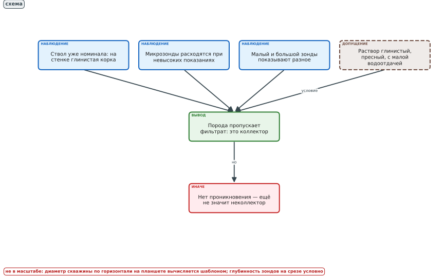
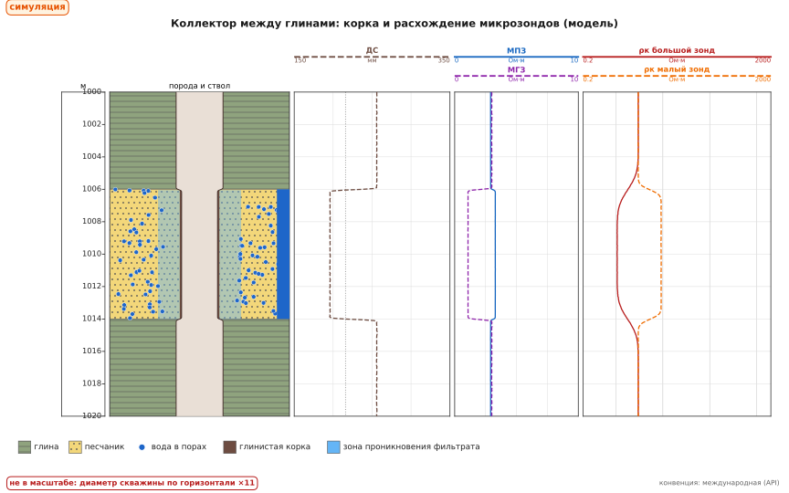

Путь › Как узнать коллектор › Шаг 14 из 34
Прямые признаки коллектора на диаграммах
В книге: «Выделение коллектора в терригенном разрезе: прямые качественные признаки» стр. 96
Опирается на: шаг 4 «Корка сужает скважину против коллектора» (предпосылка), шаг 12 «Подписи пород на диаграммах ГИС» (предпосылка)
Суть
Коллектор выдаёт себя тем, что пропускает фильтрат раствора.
Прямых признака три: сужение ствола из-за корки, расхождение микрозондов и зона проникновения.
Это следы фильтрации, а не самой нефти, и работают они только при качественном глинистом растворе.
Пороговая идея. Коллектор выдаёт себя тем, что пропускает фильтрат: корка, расхождение микрозондов и зона проникновения — следы фильтрации, а не самой нефти. модель
Анимация: как это происходит




Прибор поднимается от забоя мимо глин и плотного известняка: ствол номинальный или с кавернами, микрозонды не расходятся, зонды показывают одно и то же — признаков фильтрации нет.
Не в масштабе: диаметр скважины по горизонтали на планшете ×вычисляется шаблоном; глубинность зондов на срезе ×условно. Допущения: Кривые синтетические: рассчитаны из модели пласта (формула Арчи, пористость песчаника 22 %), а не записаны в реальной скважине; Сопротивление пластовой воды 0,05 Ом·м и фильтрата 0,5 Ом·м — условные значения, в узле не заданы; Глубины 1000–1023 м и толщины пластов условные; Все датчики прибора условно в одной точке; в реальном приборе они смещены по длине; Глубинность зондов на срезе показана условно; Кабельный каротаж записывается при подъёме прибора.
Как это работает
Почему коллектор вообще видно
Автор делает вывод: коллектор можно выделить по ГИС, потому что он отличается от соседних пород. Неколлектор — порода, которая не может отдавать флюид. Коллектор отличается от него проницаемостью, пористостью и глинистостью. стр. 96
«Предпосылкой выделения коллектора геофизическими методами [3, 5] является его отличие от вмещающих пород-неколлекторов по проницаемости, пористости, глинистости.»
Признаки коллектора бывают двух видов: прямые качественные и косвенные количественные. Прямые качественные признаки показывают, что в порах возможна фильтрация. Через поры могут двигаться вода, нефть, газ и фильтрат раствора. стр. 96
«Признаки коллектора делятся на прямые качественные и косвенные количественные.»
«Прямые признаки указывают на возможность фильтрации в порах коллектора воды, нефти, газа и фильтрата бурового раствора.»
Три прямых признака
Признак первый — сужение диаметра скважины из-за глинистой корки. Фактический диаметр становится меньше номинального. стр. 96
«сужение диаметра за счет образования глинистой корки»

Признак второй — положительное приращение микрозондов при невысоких показаниях. Против проницаемого пласта показания микропотенциал-зонда превышают показания микроградиент-зонда. стр. 96
«положительные приращения на диаграмме микрозондов»
Признак третий — зона проникновения или радиальный градиент сопротивления. Это изменение сопротивления пласта по мере удаления от скважины. Его видят по данным БЭЗ или зондов разной глубинности. стр. 96
«наличие зоны проникновения или радиального градиента сопротивления в пласте по данным БЭЗ или диаграмм разноглубинных зондов»
Условие
Это допущение автора: признаки по таблице 21 работают при качественном глинистом растворе. У такого раствора малая водоотдача и невысокая минерализация. Примеры такого выделения коллекторов — рис. 14, 58, 68, 76 книги. стр. 96
«При бурении на качественном глинистом растворе с малой водоотдачей и невысокой минерализацией признаки коллектора устанавливают в соответствии с табл. 21»
«Примеры выделения межзерновых коллекторов при бурении на качественном глинистом растворе приведены на рис. 14, 58, 68, 76.»
Нюансы
Третий признак не обязателен. В продуктивных коллекторах сопротивления зоны проникновения и пласта могут совпасть. Тогда проникновения на диаграммах не видно, хотя коллектор есть. стр. 96
«Последний признак не является обязательным, поскольку в продуктивных коллекторах могут создаваться условия»
Когда раствор хуже
С ростом водоотдачи корка на коллекторе растёт. В хороших условиях она не больше 1 см, при плохом растворе достигает 3-4 см. Разница показаний микрозондов при этом сначала растёт, а потом убывает. стр. 96
«возрастает глинистая корка на поверхности коллектора»
«При этом разница в показаниях микрозондов сначала возрастает, а потом убывает.»
При толстой корке микрометоды уже не видят промытую зону — ближнюю к стенке часть зоны проникновения. Тонкие прослои глин и плотных пород внутри коллектора перестают выделяться. Ведь корка покрывает и их. стр. 96
«тонкие прослои неколлекторов в коллекторе (глин и плотных пластов) перестают выделяться, так как корка покрывает и эти прослои»
При солёном растворе корки образуются, но качественных диаграмм микрозондов практически нет. А при бурении на технической воде признаков на микрозондах и кавернограмме обычно нет совсем. стр. 96
«При возрастании минерализации раствора корки на стенках коллекторов образуются, но качественные диаграммы микрозондов практически не получаются.»
«При бурении на технической воде признаки коллекторов на диаграммах микрозондов и кавернограммах обычно отсутствуют»
Цифры и условия
- Глинистая корка: не больше 1 см в хороших условиях. стр. 96
- При плохом растворе корка достигает 3-4 см. стр. 96
- Условие: качественный глинистый раствор — малая водоотдача и невысокая минерализация. стр. 96
Частая ошибка модель
Ошибка: Если зоны проникновения нет, то пласт — не коллектор.
На самом деле: Признак проникновения не обязателен: в продуктивных коллекторах сопротивления зоны проникновения и пласта могут совпасть. стр. 96
Что это значит для данных модель
Прямые признаки — это разности и сравнения кривых (диаметр vs номинал, микрозонды между собой, зонды разной глубины), а не абсолютные значения.
- Вход
- кавернограмма, микрозонды, БЭЗ или разноглубинные зонды, параметры раствора
- Выход
- интервалы-коллекторы
- Где ломается
- При плохом или солёном растворе и на воде признаки пропадают; тонкие прослои под толстой коркой не видны.
- гипотеза Разностные признаки (сужение ствола, расхождение микрозондов) устойчивее для автоматики, чем абсолютные уровни кривых.
Где здесь ручной труд специалиста
- Входные данные
- кавернограмма, микрозонды, БЭЗ, параметры раствора
- Ручные шаги
- просмотр каждой кривой по интервалам, сверка признаков
- Точки суждения
- достаточно ли признаков при данном растворе
- Время
- ручной просмотр каждой скважины
- Типичные ошибки
- отбрасывать коллектор из-за отсутствия проникновения
Аналогия модель
Как обнаружение по побочным эффектам: сам поток не виден, но видны его следы (отложения, изменение среды).
Где аналогия перестаёт работать: Следы зависят от условий бурения и могут исчезнуть при наличии потока — отсутствие следа не доказывает отсутствие коллектора.
Как это делается сейчас модель
Микрозонды и кавернограммы по-прежнему используют; сегодня их дополняют микроимиджерами и методами ЯМР.
Новые понятия
- прямые качественные признаки коллектора (direct qualitative indicators)
- Признаки на диаграммах, прямо указывающие на фильтрацию в порах: корка, приращения микрозондов, проникновение. стр. 96
- положительное приращение микрозондов (positive microlog separation)
- Превышение показаний микропотенциал-зонда над микроградиент-зондом против проницаемого пласта. стр. 96 модель
- радиальный градиент сопротивления (radial resistivity profile)
- Изменение сопротивления пласта по мере удаления от скважины из-за проникновения фильтрата. стр. 96 модель
- промытая зона (flushed zone)
- Ближайшая к стенке часть зоны проникновения, где фильтрат вытеснил пластовые флюиды сильнее всего. стр. 96 модель
- неколлектор (non-reservoir)
- Порода, не способная отдавать флюид (низкая проницаемость). стр. 96 модель
Проверь себя
Верный ответ: Сужение диаметра скважины из-за глинистой корки; Положительное приращение микрозондов при невысоких показаниях; Зона проникновения или радиальный градиент сопротивления
Три прямых признака — корка, приращение микрозондов и проникновение; максимум гамма-метода характерен для глин. Где это в тексте (стр. 96) →
Верный ответ: Это не доказывает отсутствие коллектора: признак не обязателен
В продуктивных коллекторах сопротивления зоны проникновения и пласта могут совпасть. Где это в тексте (стр. 96) →
Как меняется разница показаний микрозондов, когда корка становится всё толще? Расставьте по порядку.
Перетащите пункты (мышью или пальцем за ⠿) или двигайте кнопками ↑ ↓.
- Потом разница показаний убывает
- Разница показаний микрозондов сначала растёт
- Водоотдача раствора растёт, корка утолщается
Верный ответ: Водоотдача раствора растёт, корка утолщается → Разница показаний микрозондов сначала растёт → Потом разница показаний убывает
Автор: при росте корки разница показаний микрозондов сначала возрастает, а потом убывает. Где это в тексте (стр. 96) →
Источник
Все утверждения шага с дословной цитатой автора и страницей книги (по PDF).
Коллектор выделяют по его отличию от неколлекторов по проницаемости, пористости, глинистости. вывод
«Предпосылкой выделения коллектора геофизическими методами [3, 5] является его отличие от вмещающих пород-неколлекторов по проницаемости, пористости, глинистости.»
Признаки коллектора бывают прямые качественные и косвенные количественные. наблюдение
«Признаки коллектора делятся на прямые качественные и косвенные количественные.»
Прямые признаки указывают на возможность фильтрации флюидов и фильтрата в порах. наблюдение
«Прямые признаки указывают на возможность фильтрации в порах коллектора воды, нефти, газа и фильтрата бурового раствора.»
Признак 1: сужение диаметра скважины из-за глинистой корки. наблюдение
«сужение диаметра за счет образования глинистой корки»
Признак 2: положительные приращения на микрозондах при невысоких показаниях. наблюдение
«положительные приращения на диаграмме микрозондов»
Признак 3: зона проникновения или радиальный градиент сопротивления по БЭЗ или разноглубинным зондам. наблюдение
«наличие зоны проникновения или радиального градиента сопротивления в пласте по данным БЭЗ или диаграмм разноглубинных зондов»
Эти признаки работают при качественном глинистом растворе с малой водоотдачей и невысокой минерализацией. допущение
«При бурении на качественном глинистом растворе с малой водоотдачей и невысокой минерализацией признаки коллектора устанавливают в соответствии с табл. 21»
Признак проникновения не обязателен: в продуктивных коллекторах сопротивления зоны проникновения и пласта могут совпасть. вывод
«Последний признак не является обязательным, поскольку в продуктивных коллекторах могут создаваться условия»
С ростом водоотдачи корка растёт: до 1 см в хороших условиях, до 3-4 см при плохом растворе. наблюдение
«возрастает глинистая корка на поверхности коллектора»
Разница показаний микрозондов с ростом корки сначала растёт, потом убывает. наблюдение
«При этом разница в показаниях микрозондов сначала возрастает, а потом убывает.»
При толстой корке микрометоды не видят промытую зону, а тонкие прослои неколлекторов перестают выделяться. вывод
«тонкие прослои неколлекторов в коллекторе (глин и плотных пластов) перестают выделяться, так как корка покрывает и эти прослои»
При солёном растворе корки образуются, но качественных диаграмм микрозондов практически нет. наблюдение
«При возрастании минерализации раствора корки на стенках коллекторов образуются, но качественные диаграммы микрозондов практически не получаются.»
На технической воде признаков коллектора на микрозондах и кавернограмме обычно нет. наблюдение
«При бурении на технической воде признаки коллекторов на диаграммах микрозондов и кавернограммах обычно отсутствуют»
Примеры выделения коллекторов на качественном глинистом растворе — рис. 14, 58, 68, 76. наблюдение
«Примеры выделения межзерновых коллекторов при бурении на качественном глинистом растворе приведены на рис. 14, 58, 68, 76.»
На этот шаг опираются: шаг 15 «Проникновение и повторные замеры», шаг 16 «Порог «коллектор или неколлектор»», шаг 27 «Вычесть прослои неколлектора», шаг 31 «Чем сложны карбонатные коллекторы».